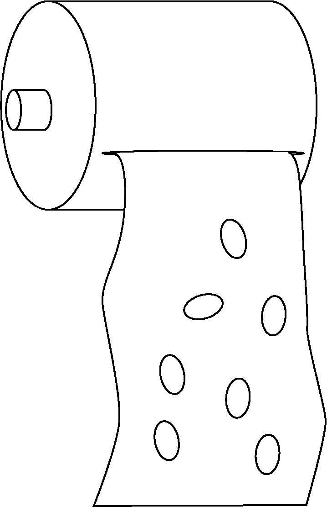

Object idea
Week 03 refletions.
This week we were into laser cut machines. I chose to develop a product that I was thinking to design for my master's project. I started thinking about the model structure as a layer to be able to cut it into the laser cut. That drives the project into patterns to blend wood and ways to do it with the laser cutter. The same happened with the joins, I had to be able to join the object structure without screws or glue. One problem that I found was that the length of the material changed when blending it. I needed two iterations to fit the tapes on the body.
The process to cut the pattern in the wood took me almost an hour, because of the pattern style. I found interesting the balance between aesthetic and efficiency of the process.
This is the model with color layers to help in the cut post-process. On the left, I had the second iteration of the tapes with the correct color order, red for the inside cuts (to do them first) and the blue one for outside cuts.
As a reflection, using laser-cut allows me to quickly prototype ideas and objects and make an iteration process with them. As I'm trying to change my design process from an idea/finished design/object to a prototype as a way to have more insights I think this way of prototyping allows me to improve this way of design and do a quick prototype iteration and trials.
Prototype